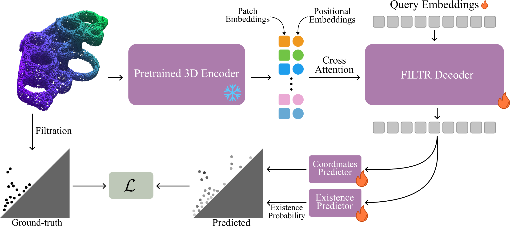
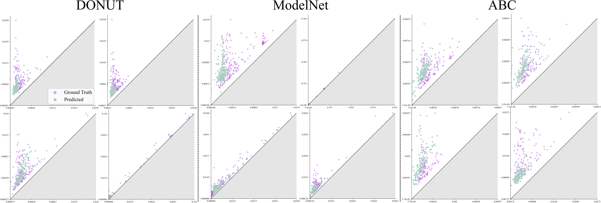

FILTR: Extracting Topological Features from Pretrained 3D Models
Abstract
Recent advances in pretraining 3D point cloud encoders (e.g., Point-BERT, Point-MAE) have produced powerful models, whose abilities are typically evaluated on geometric or semantic tasks. At the same time, topological descriptors have been shown to provide informative summaries of a shape's multiscale structure. In this paper we pose the question whether topological information can be derived from features produced by 3D encoders. To address this question, we first introduce DONUT, a synthetic benchmark with controlled topological complexity, and propose FILTR (Filtration Transformer), a learnable framework to predict persistence diagrams directly from frozen encoders. FILTR adapts a transformer decoder to treat diagram generation as a set prediction task. Our analysis on DONUT reveals that existing encoders retain only limited global topological signals, yet FILTR successfully leverages information produced by these encoders to approximate persistence diagrams. Our approach enables, for the first time, data-driven extraction of persistence diagrams from raw point clouds through an efficient learnable feed-forward mechanism.
Method

We evaluate the topological understanding of pretrained 3D point-cloud encoders through three complementary tasks. First, we probe frozen encoder features to predict the number of connected components of the underlying shape. Second, we use the same probing setting to predict genus, providing a more demanding test of global topological structure. Third, we measure the alignment between encoder features and topological descriptors derived from persistence diagrams using CKA, in order to assess whether multiscale topological information is present in the learned representations and how accessible it is.
FILTR

FILTR (Filtration Transformer) is a DETR-inspired framework for predicting persistence diagrams directly from point clouds in a feed-forward manner. A frozen pretrained 3D encoder first produces point-cloud features and associated 3D positional information, which are projected to the decoder dimension and used to condition a transformer decoder through cross-attention. The decoder processes a fixed set of learned queries and outputs unordered persistence pairs together with existence scores, allowing the model to represent both genuine topological features and empty slots. Following the paper, FILTR enforces the birth-death ordering in its pair parameterization and is trained with a set-prediction objective combining Hungarian matching, regression on matched pairs, an existence loss, and a diagonal regularizer for unmatched predictions. This design lets FILTR leverage frozen 3D features to approximate persistence diagrams efficiently, without iterative post-processing or end-to-end retraining of the backbone.

Some persistence diagram generation results. Although FILTR is trained on DONUT, it still manages to accurately reconstruct persistence diagrams for more challenging point clouds without any fine-tuning.
BibTeX
@inproceedings{Martinez2026FILTR,
title={FILTR: Extracting Topological Features from Pretrained 3D Models},
author={Louis Martinez and Maks Ovsjanikov},
booktitle={Proceedings of the IEEE/CVF Conference on Computer Vision and Pattern Recognition (CVPR)},
year={2026}
}